More
Work that does not fit into a case study — studies, process documentation, and things made for their own sake.
Visual studies
Renders, sketches, and computational experiments. Most of these were made to answer a question rather than to finish anything.


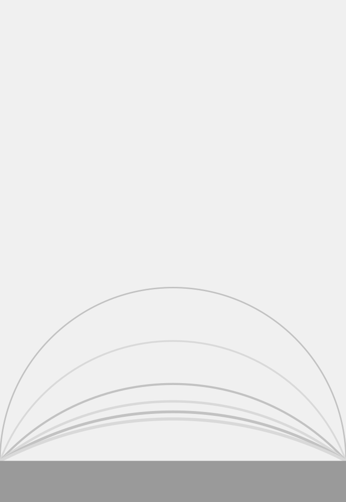


Making
Process documentation from the shop — jigs, test pieces, and the parts that did not work.


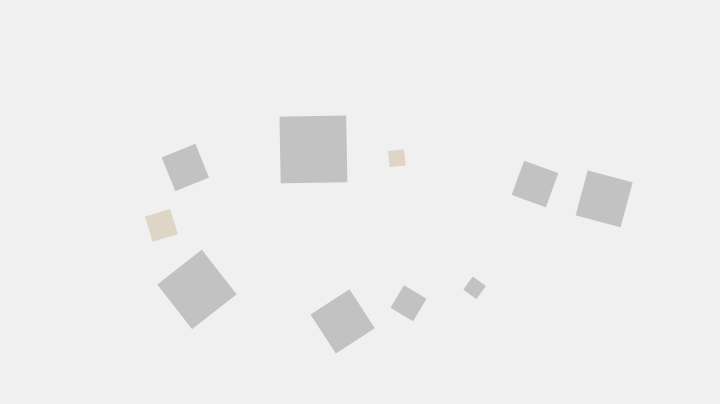


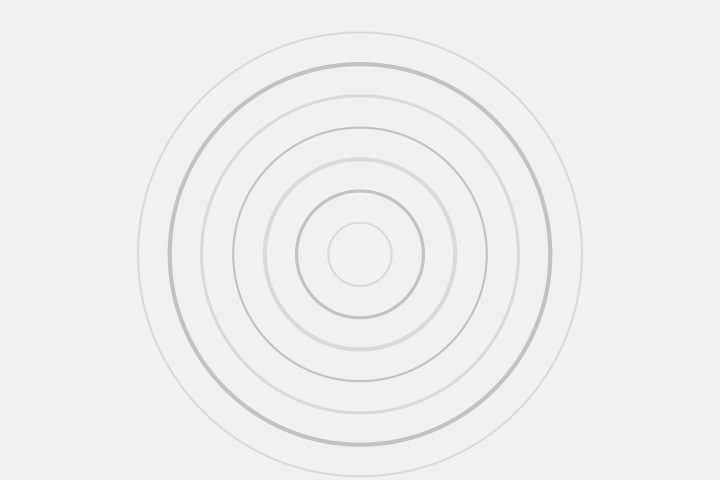

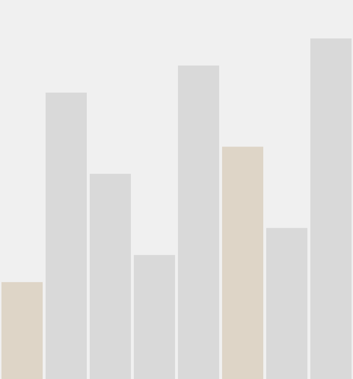
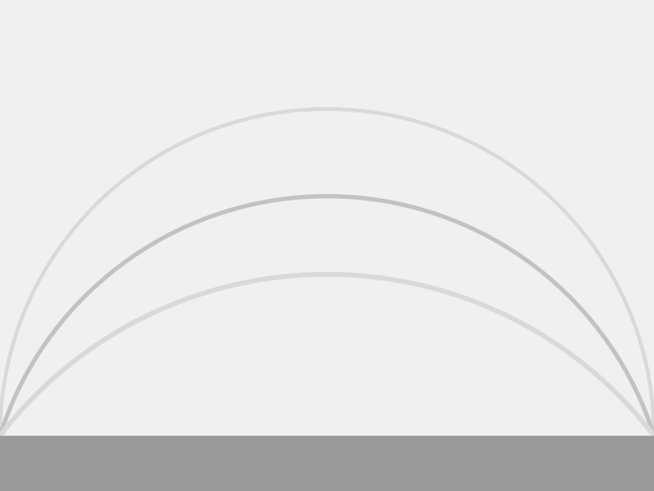
Photography
Photographs from the studio and from further afield.


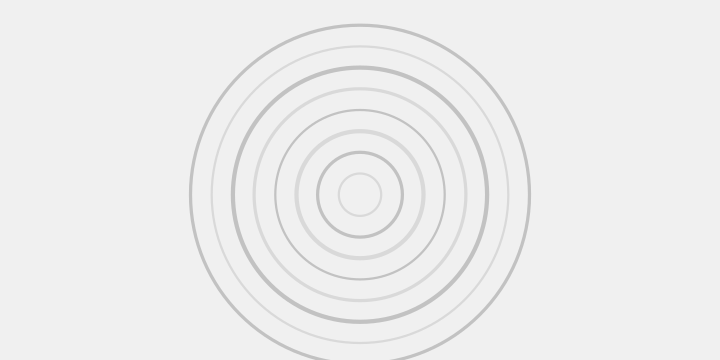
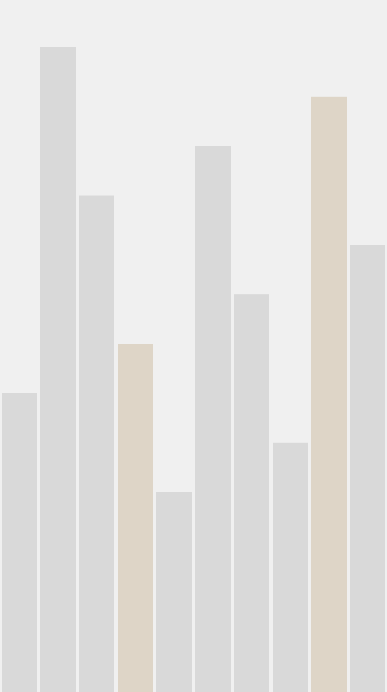
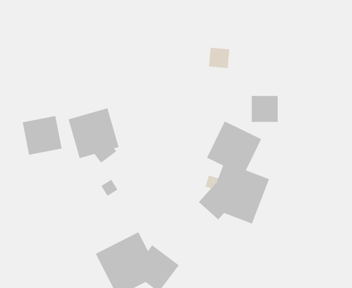
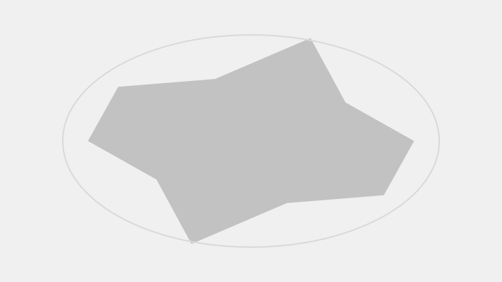
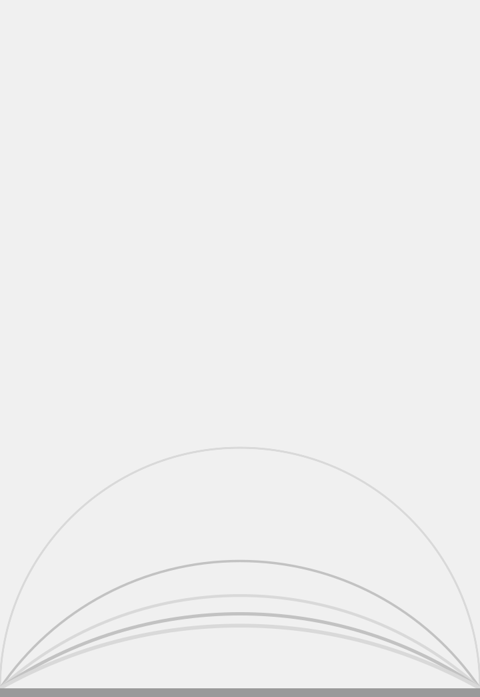

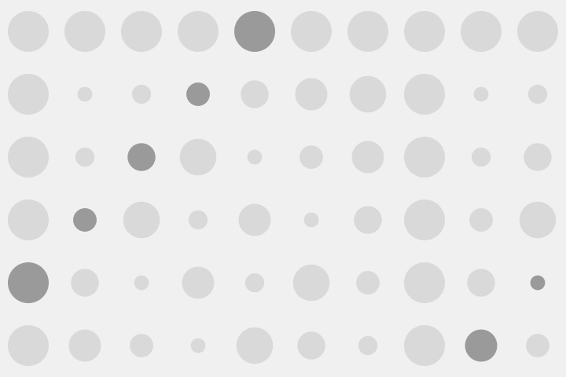
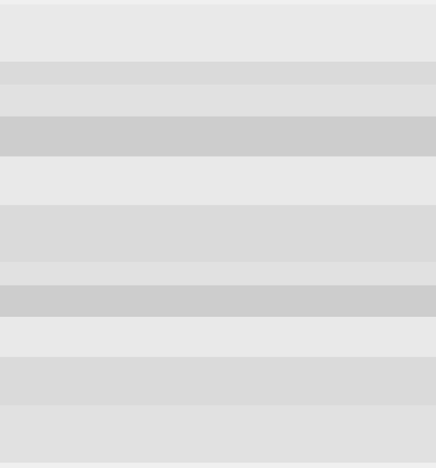
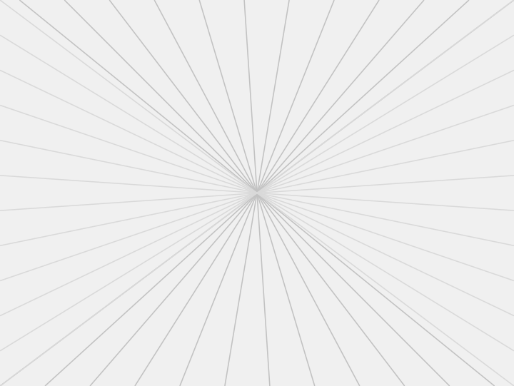